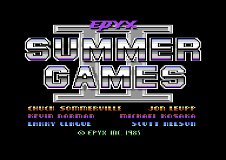
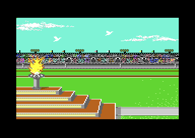
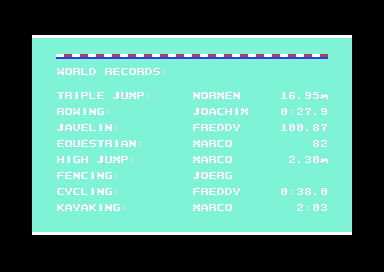

<meta charset="utf-8">
<meta name="viewport" content="width=device-width, initial-scale=1">
<title>Summer Games II</title>
<link rel="preconnect" href="https://fonts.googleapis.com">
<link rel="stylesheet" href="https://fonts.googleapis.com/css2?family=Lato:wght@400;700;900&family=IBM+Plex+Mono:wght@400;500&display=swap">
<style>
:root{
  --bg:#23262d; --paper:#e9e7e1; --surface:#ffffff; --surface-2:#f1efea; --line:#d5d3cc; --line-soft:#e0ded8;
  --ink:#2f3136; --ink-soft:#55585f; --ink-mute:#80838a;
  --link:#1f5fa8; --link-hover:#154480; --accent:#1f5fa8;
  --amber:#c25a00; --cyan:#1f5fa8; --coral:#d04a3a; --green:#2a8a4a; --violet:#4a5bd6; --hl:#fff0c2;
  --chip:#2f3136; --chip-ink:#ffffff;
  --c64blue:#40318d; --c64grey:#686868;
  --fd:'Lato',system-ui,sans-serif; --fb:'Lato',system-ui,sans-serif; --fm:'IBM Plex Mono',ui-monospace,Menlo,monospace;
  --col:1080px; --gx:68px; --fs:17px; --lh:1.6; --hw:900; --h1:46px; --h2:26px; --sy:48px; --pp:26px; --r:10px;
  --plate-shadow:0 1px 2px rgba(0,0,0,.05),0 4px 14px rgba(0,0,0,.05);
}
*{box-sizing:border-box}
html{background:var(--bg);min-height:100%}
body{background:var(--paper);color:var(--ink);font-family:var(--fb);font-size:var(--fs);line-height:var(--lh);max-width:var(--col);margin:0 auto;min-height:100vh;padding:0 0 4rem}
h1,h2,h3{font-weight:var(--hw);letter-spacing:-.01em;text-wrap:balance;color:var(--ink);margin:0}
.wrap{padding:0 var(--gx)}
.hero{padding:48px var(--gx) 8px;text-align:left}
.eyebrow{font-family:var(--fm);font-size:12px;letter-spacing:.08em;text-transform:uppercase;color:var(--ink-mute);margin:0 0 10px}
.hero h1{font-size:var(--h1);line-height:1.15;letter-spacing:-.02em;margin:0 0 14px}
.hero .sub{margin:0 0 .6em;color:var(--ink-soft)}
section{padding:var(--sy) 0 24px}
section:last-of-type{border-bottom:none}
.fig{font-family:var(--fm);font-size:12px;letter-spacing:.08em;text-transform:uppercase;color:var(--ink-mute);margin:0 0 10px}
h2.t{font-size:var(--h2);margin-bottom:12px}
.lede{color:var(--ink-soft);margin:0 0 30px}
.plate{background:var(--surface);border:1px solid var(--line);border-radius:var(--r);padding:var(--pp);box-shadow:var(--plate-shadow)}
.cap{font-size:14px;color:var(--ink-mute);margin-top:14px;line-height:1.55}
.cap b{color:var(--ink);font-weight:700}
code{font-family:var(--fm);font-size:.82em;background:var(--chip);color:var(--chip-ink);border-radius:4px;padding:2px 6px;overflow-wrap:break-word;-webkit-box-decoration-break:clone;box-decoration-break:clone}

.ft-grid{display:grid;gap:6px}
.ft-grid button{padding:0;position:relative;line-height:0}
.ft-grid canvas{width:100%;image-rendering:pixelated;display:block}
.ft-tag{position:absolute;left:3px;top:3px;font:500 11px/1.3 var(--fm);background:rgba(255,255,255,.88);color:var(--ink);border-radius:3px;padding:1px 4px}
.ft-mark{position:absolute;right:3px;bottom:3px;font:500 10px/1.3 var(--fm);background:var(--chip);color:var(--chip-ink);border-radius:3px;padding:1px 4px}
.ft-big canvas{width:100%;max-width:768px;image-rendering:pixelated;display:block;margin:0 auto}
.ft-table{border-collapse:collapse;font-size:14px;width:100%}
.ft-table td,.ft-table th{border-bottom:1px solid var(--line-soft);padding:5px 8px;text-align:left;vertical-align:top}
.ft-two{display:grid;grid-template-columns:1fr 1fr;gap:16px;align-items:start}
.ft-four{display:grid;grid-template-columns:repeat(3,1fr);gap:12px;margin:0 0 20px}
.ft-four .plate,.ft-two .plate{margin:0;padding:12px}
.ft-shot,.ft-px{width:100%;height:auto;image-rendering:pixelated;display:block}
.ft-wide{max-width:960px;margin:0 auto}
.plate{margin:0 0 22px}
.ft-scroll{overflow-x:auto}
.ft-lab{display:block;font-family:var(--fm);font-size:13px;color:var(--ink-soft);margin:6px 0}
.ft-range{width:100%;max-width:520px;display:block}
.ft-controls{display:grid;grid-template-columns:repeat(3,1fr);gap:14px;margin:12px 0 0}
.ft-read{font-family:var(--fm);font-size:14px;background:var(--surface-2);border-radius:6px;padding:10px 12px;margin:12px 0 0}
.ft-bar-out{height:12px;background:var(--surface-2);border:1px solid var(--line);border-radius:6px;overflow:hidden;margin:10px 0 0;max-width:520px}
.ft-bar-out div{height:100%;background:repeating-linear-gradient(45deg,var(--amber) 0 6px,#e08a3c 6px 12px)}
.ft-meter{position:relative;width:110px;height:18px;background:var(--surface-2);border:1px solid var(--line);border-radius:4px;overflow:hidden}
.ft-meter span{position:absolute;left:0;top:0;bottom:0;background:var(--cyan);opacity:.35}
.ft-meter b{position:relative;font:500 12px/18px var(--fm);padding-left:6px}
.ft-objs{white-space:nowrap}
.ft-obj{display:inline-flex;flex-direction:column;align-items:center;margin:0 3px 0 0;padding:2px;background:#222;border-radius:4px;vertical-align:top}
.ft-obj i{font:500 10px/1.2 var(--fm);color:#fff;font-style:normal}
.ft-swapped{outline:2px dashed var(--amber);outline-offset:-2px}
.ft-swapped i{text-decoration:line-through;text-decoration-color:var(--amber)}
.ft-table canvas{background:#222;border-radius:4px;image-rendering:pixelated}
.ft-dead{display:flex;flex-wrap:wrap;gap:6px;margin:12px 0 0}
.ft-dead button{font-size:12px;padding:4px 8px}
@media (max-width:760px){:root{--gx:16px;--h1:36px;--pp:14px}.ft-two,.ft-four,.ft-controls{grid-template-columns:1fr}}
sup.fn{font-size:.7em;line-height:0}
sup.fn a{text-decoration:none}
sup.fn + sup.fn::before{content:","}
.overview-shot{margin:22px 0}
.overview-shot img{width:100%;max-width:768px;height:auto;aspect-ratio:384/272;image-rendering:pixelated;display:block}
.overview-shot figcaption{font-size:14px;color:var(--ink-mute);margin-top:8px;max-width:768px}
</style>
<!-- tabs -->
<header class="hero">
  <p class="eyebrow">Commodore 64 · 1985 · Epyx</p>
  <h1>Summer Games II</h1>
  <p class="sub">Eight new Olympic events for up to eight players, from the triple jump to white-water kayaking, each with its own way of using the joystick. <i>Zzap!64</i> gave it 97 per cent and called it "the sports simulation to end all sports simulations".</p>
</header>
<main class="wrap">

<section id="game">
  <h2 class="t">A torch, a flame and eight new events</h2>
  <p>The games open the way the real ones do. A runner carries the torch around the stadium and up the steps, lights the flame, and a flock of white doves flies up and away. Then up to eight players type their names, each picks a <a href="gameplay.html#countries">country</a> by its flag and hears its anthem, and the competition begins.<sup class="fn"><a href="about.html#src-2" title="Zzap!64 5, review">2</a></sup></p>
  <figure class="overview-shot"><figcaption>The title picture, with the six names of its makers. It waits about 25 seconds, or until a joystick moves (<a href="source-title.html#9F40"><code>$9F40</code></a>). Hold three keys as it loads and it reads <a href="discoveries.html#bummer">BUMMER GAMES II</a>.</figcaption></figure>
  <p>Summer Games had given players the sprint, the pole vault and the diving board. Its sequel brings eight more: the <a href="gameplay.html#triple-jump">triple jump</a>, <a href="gameplay.html#rowing">rowing</a>, the <a href="gameplay.html#javelin">javelin</a>, <a href="gameplay.html#equestrian">show jumping</a>, the <a href="gameplay.html#high-jump">high jump</a>, <a href="gameplay.html#fencing">fencing</a>, <a href="gameplay.html#cycling">cycling</a>, and <a href="gameplay.html#kayaking">kayaking</a>. Almost none of them is won by waggling the stick. A rower has to pull in rhythm, a cyclist turns the stick round like a pedal, and a fencer holds fire to attack and lets go to defend.</p>
  <figure class="overview-shot"><figcaption>The <a href="gameplay.html#opening">opening ceremony</a>. The flame flickers because the game writes random bytes into its shape every frame (<a href="source-opening.html#7757"><code>$7757</code></a>).</figcaption></figure>
  <p>After each event the <a href="gameplay.html#scoring">awards</a> list every player in order, give gold, silver, and bronze medals worth 5, 3, and 1 points, and play the winner's anthem while their flag waves. A new best score goes onto the disk as a <a href="gameplay.html#records">world record</a>. After the last event the <a href="gameplay.html#champion">champion</a> is announced from last place up, and the <a href="gameplay.html#closing">closing ceremony</a> ends the games with a jet-pack flyer, the dying flame, the Epyx blimp, and fireworks.</p>
</section>

<section id="makers">
  <h2 class="t">The people behind the game</h2>
  <p>Epyx made the game and released it in North America in June 1985. The title picture names its six makers: Chuck Sommerville, Jon Leupp, Kevin Norman, Michael Kosaka, Larry Clague, and Scott Nelson. Wikipedia credits the music to Randy Glover and Larry Clague.<sup class="fn"><a href="about.html#src-1" title="Wikipedia, Summer Games II">1</a></sup> Which of the six wrote which event is not recorded in the game or in the sources read for these pages.</p>
  <p>In Britain the game was one of the first of the Epyx titles that US Gold had just taken on, after Quicksilva had sold the first Summer Games there.<sup class="fn"><a href="about.html#src-2" title="Zzap!64 5, review">2</a></sup> It was a bestseller in the UK, and by late 1987 it was Epyx's second best-selling Commodore game, after Winter Games.<sup class="fn"><a href="about.html#src-1" title="Wikipedia, Summer Games II">1</a></sup></p>
  <p>The disk shows how one team built eight events. Each is a separate program of up to 47 KB that the game's own loader reads from the disk, and most of them share one music driver and one sound-effects routine, copied from event to event. Some carry leftovers of the others: Javelin's sound table, copied from another event, has seven entries that point into Javelin's own code, and the opening ceremony is Summer Games' own, with SUMMER GAMES and COPYRIGHT (C) 1983 EPYX still in its code (<a href="discoveries.html#leftovers">leftovers</a>).</p>
</section>

<section id="reception">
  <h2 class="t">97 per cent and a Gold Medal</h2>
  <p><i>Zzap!64</i> reviewed the game in issue 5, in September 1985, and gave it a Gold Medal with 97 per cent: 99 for presentation, 96 for sound, and 98 for value at "a tenner". "If you don't have this in your collection then you're wasting your 64," wrote one reviewer; another found the animation "amazingly life-like" and the tunes "never-ending". The magazine's office fought over the <a href="gameplay.html#records">world records</a> that the disk saves.<sup class="fn"><a href="about.html#src-2" title="Zzap!64 5, review">2</a></sup></p>
  <p>In America <i>Ahoy!</i> found the production values "absolutely top of the line, even better than the original Summer Games", called kayaking "the pleasant surprise of the disk", and named show jumping and fencing the highlights. Its one complaint was fencing's colours: green and red blades on fencers in white shirts.<sup class="fn"><a href="about.html#src-3" title="Ahoy! 23, review">3</a></sup> The game was runner-up for Game of the Year at the Golden Joystick Awards.<sup class="fn"><a href="about.html#src-1" title="Wikipedia, Summer Games II">1</a></sup></p>
  <figure class="overview-shot"><figcaption>The world records saved on the copy studied for these pages, set by its earlier owners. The disk keeps one record for each of the eight events.</figcaption></figure>
</section>

<section id="explore">
  <h2 class="t">What the reviewers did not see</h2>
  <p>The second disk side holds more than its four events. It also carries Summer Games' two swimming events, the <a href="gameplay.html#swimming">Freestyle Relay and the 100 metres</a>, so that with the first game's disk the two games offer sixteen events. The game was written for American machines, and three of its clocks show it: on a European Commodore 64, <a href="discoveries.html#pal-clocks">Cycling, Kayaking and the swimming events</a> fall behind, so a race is timed about a sixth shorter than it really took. Kayaking's code would push the boat with the river's flow, but <a href="discoveries.html#current">the map of the current is empty</a>.</p>
  <p><a href="music.html">Play all 35 tunes</a>, from the eighteen anthems to the closing ceremony, <a href="graphics.html">see every athlete's shapes</a>, or <a href="gameplay.html#high-jump">work out a high jump's clearance</a>.</p>
</section>
</main>
<footer style="margin:16px 0 0;padding:22px var(--gx) 0;border-top:1px solid #e0ded8;font-family:'IBM Plex Mono',ui-monospace,Menlo,monospace;font-size:12px;color:#80838a"><a href="https://github.com/gamesexplained/gamesexplained" style="color:#1f5fa8;text-decoration:none">GitHub</a> · <a href="https://discord.gg/3V9GWyRDWV" style="color:#1f5fa8;text-decoration:none">Discord</a><br>© Games Explained contributors. Write-ups, facts and symbol maps are available under <a href="https://creativecommons.org/licenses/by-sa/4.0/" style="color:#1f5fa8;text-decoration:none">CC BY-SA 4.0</a>; code under <a href="https://opensource.org/licenses/MIT" style="color:#1f5fa8;text-decoration:none">MIT</a></footer>
